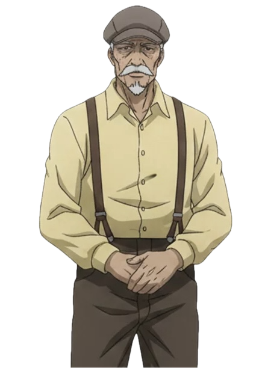
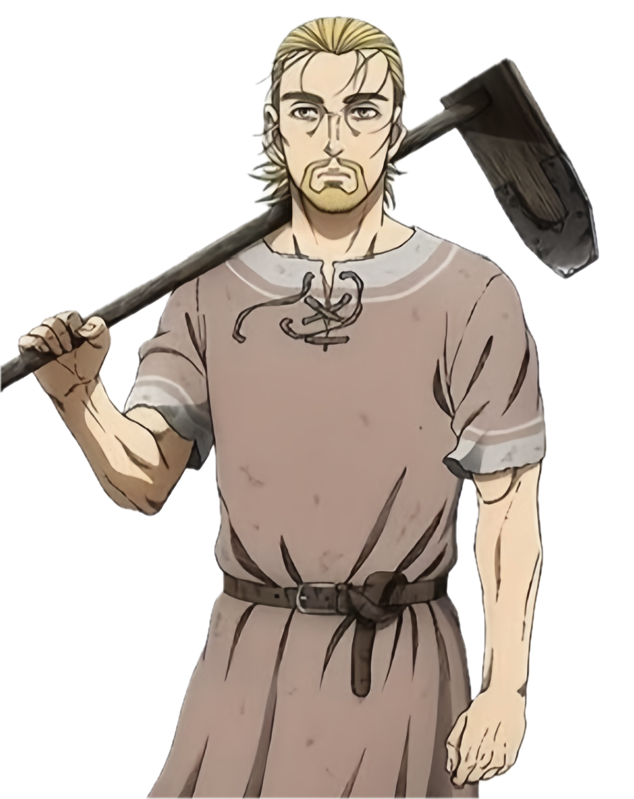

Narrator
The four key villagers stand huddled together in the damp morning chill, watching your movements with guarded expressions. Who will you interrogate first?
Select a villager from the sidebar to begin interrogation